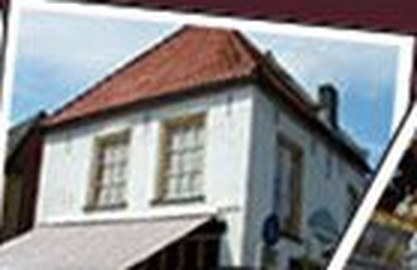

Een "bruin" café met activiteiten in het centrum van Oosterhout. Sinds ca. 1680 gevestigd in een fraai pand en sinds mensenheugenis een pleisterplaats.
AgendaOpeningstijden
Leijsenhoek, OosterhoutHet café heeft een mooi terras aan het autovrije gedeelte van de Leijsenhoek. De bar voorziet in een ruim assortiment aan bieren, waaronder een aantal bieren van de Gulpener Bierbrouwerij. Die brouwt ambachtelijke natuurzuivere bieren en ontving in 2003 het Milieukeurmerk.
Via Liever Live Lokaal staan opnames van lokale bands en muziekquizjes, opgenomen in Oud Brabant, ook online. Bekijk de Facebookpagina.
| Maandag | gesloten |
| Dinsdag | 19:00 tot 1:00 uur |
| Woensdag | 19:00 tot 1:00 uur |
| Donderdag | 19:00 tot 1:00 uur |
| Vrijdag | 15:00 tot ca. 2:00 uur |
| Zaterdag | 15:00 tot ca. 2:00 uur |
| Zondag | 15:00 tot ca. 22:00 uur |
Op zondag mogelijk met uitloop.
Café Oud Brabant
Leijsenhoek 11-13
4901 ER Oosterhout
06 13 59 30 99 (Dianne)
0162 42 92 82
info@cafeoudbrabant.nl